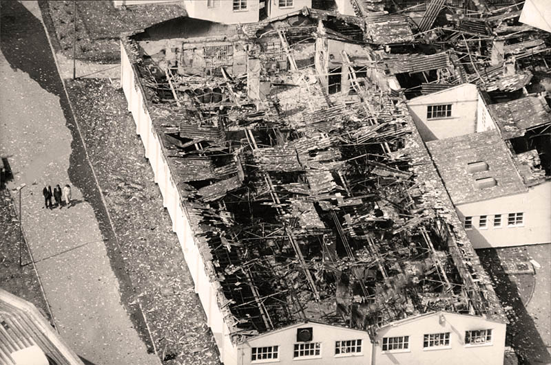

Northeye Prison Site
Royal Air Force (1940-1964)
This site was originally used during the Second World War by the RAF as a Mobile Radio Unit, reserved if Chain Home radar station located at Pevensey became damaged by the enemy.[16]
It wasn't until after the war in 1958 it became the RAF Wartling Domestic Site, which comprised of hutted accommodation and a Married Quarters estate (which still exists as a residential area today).
HMP Northeye (1969-1992)
Following the closure of the RAF Wartling radar station in 1964, the site became HMP Northeye - a Category C prison which opened in January 1969. Many of the original RAF huts were used as prison buildings, although more added in the 1970's.
On the evening of the 30th April 1986, 60 of the 450 inmates began to set fire to buildings after an altercation with the guards.[17] With many of the huts being roofed with corrugated asbestos they were vulnerable to intense heat, causing the fires intensify and spread quickly.
Police said 12 inmates were believed to have escaped during the violence and the rest had to be evacuated to an army hall in Eastbourne. By the end of the night 40% the buildings had been completely destroyed.
The prison reopened after the riots, but for a smaller number of inmates until 1992.

United Arab Emirates (1993-2010)
After the closure of the prison, the UAE refurbished the the camp and used it as a technical training project. Aimed to prepare a younger generation of UAE nationals for a techinical future in the UAE Armed Forces.
Unknown Future
Northeye has been left disused since the UAE project ended, and is now marked on Rother Council's Development and Site Allocations Plan (DaSA)[18].